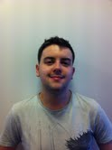
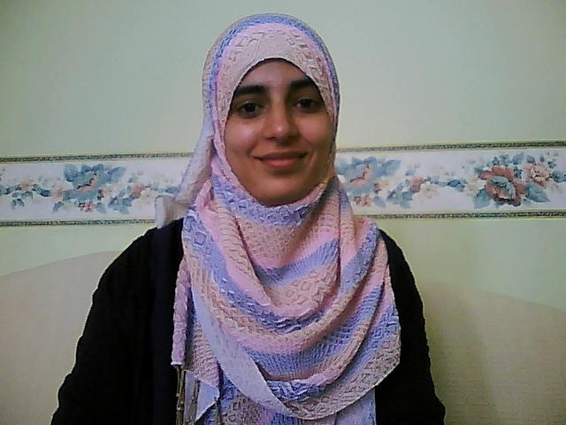

Student workplacements
Eight students from Education Studies at the University of Bedfordshire joined MirandaNet at the BETT12 show after a technical training workshop: their profiles are below.
As well as managing the concept mapping, the Twitter stream and the filming they took on a variety of other jobs such as registering participants, distributing marketing materials, setting up the studio and striking after the show. They researched the theory and practice of MirandaMods in journal papers in order to develop their assignments.
We will welcome more students to join us on the 1st March and the 3rd May on the Polhill campus.There is also a free to students training workshop on 3rd May.
As well as the technical side of the operation we will welcome students who want to join as a co-researchers in collecting data about the value of MirandaNets in promoting deep learning on 1st March.
Dr Christina Preston
Professor of Educational Innovation
University of Bedfordshire
christina.preston@beds.ac.uk
Haydn Robson
My name is Haydn Robson and I am a third year student studying Education Studies at the University of Bedfordshire, working from the Bedford campus. I’m studying to become a teacher. I am currently volunteering part time at a local school helping children learn to read. I was worried I wouldn’t do well at first coming to university but as the years have gone by I have gained more confidence. I have also learnt a lot about the sociology, psychology and history of childhood as my course requires me to know a large amount of theory. As any school is a busy environment I have also learnt how to communicate with children as well as with the members of staff that keep the school running. Also for one of my units I am working on a dissertation looking at the educational benefits of games concerning young children. I am a quick learner and am excited to get started. Working as part of a team is something I’ve done all my life and it’s a great way to find the best solution to a problem. Of course I am also capable at working on my own. I’m a strong believer in child centered education and I want to give the best teaching I can to all my students in the future. My punctuality and attendance records have always been kept to a high standard. In short, I would describe myself as an out-going individual who always thrives at any given task.
Nadia Shaheen
My name is Nadia Shaheen and I am currently in my final year studying (BA) Education Studies at the University of Bedfordshire. I hope to pursue a career in teaching in the future. I have a range of experience in working with children, being part of the Universities Access Partnership Associate scheme has allowed me to gain many skills including planning, communication, and team work skills. Through this scheme I have been enabled opportunities to help out on University open days, and events as well as go into schools and prepare sessions that increase awareness of the opportunities offered by Higher Education and assisting students on planning for the future and preparation for work.
I have also completed two years of voluntary work at Friends of Bright Eyes (FOBE) which is a charity that provides respite care and support for young children with disabilities and their families. I supported much needed projects, summer play schemes and fun stimulating activities to make the children’s time enjoyable at the centre. I have been working on a one-to-one basis with the children in order to encourage them to explore variety of activities in their daily routines. I would describe myself as a hard working student who is keen for opportunities of personal and academic development both for myself and subsequently to facilitate the effective development of others. I am also interested in volunteering at charity events as it is definitely an enjoyable experience.
Godfrey Chipunda
I am Godfrey Chipunda completing a BA (HON) Education Studies at the University of Bedfordshire . l have worked for Wickes Trevis Perkins for 6 years. My work is based on team work and effective communication amongst all staff members, to provide the best service to our customers. I have also met sales targets, worked under pressure and excelled in a busy environment. I would describe myself as a focused and outgoing person, who enjoys experiencing new things as well as socialising and interacting with others. I have been involved in a number of charity events and college events.
Grant Chaney
My name is Grant Chaney and I am in my third year of my degree in Education Studies at the University of Bedfordshire which is situated at the Bedford campus. I am currently working part-time at Sainsbury’s where I have worked for three and half years. Whilst studying and working part-time I have been running a youth football team for the last seven years.
I am a very enthusiastic person and passionate person and put 100% in to everything I do. One on my strengths is my good organisation which has been essential to succeed in my job at Sainsbury’s and helping with the football. I also ensure that I maintain good time management throughout everything I do.
I am looking in the future to go into teaching and working with children in the primary sector.
Karen Hendon
My name is Karen Hendon and I am currently studying Early Years Education at the University of Bedfordshire. I currently have worked within the public sector for 5 years; during this work I have been able to improve my communication and customer service skills. These skills have enabled me to be able to converse with people in an acceptable manner. I have also been a team leader for 2 years and, therefore, understand what it takes to manage a team and the importance of working together in a team.
I am a quick learner and am able to work either independently or within a team, I am very punctual and reliable as well. I am enthusiastic about learning new things and improving my current skills. I hope to work within the childcare sector although I have not yet decided on the role I would like.
Charlotte Wilson
I am a third year student at the University of Bedfordshire studying Education Studies. I enjoy taking part in group work, where I can build upon existing knowledge. For my dissertation, I am researching about collaborative learning within the classroom, to explore how this can help children develop their skills and knowledge. I have had previous employments where team work is essential in a fast paced environment. I also enjoy working independently. My future ambition is to go on to teach within the Army
Emma Cook
I am a third year undergraduate student studying BA Education Studies at the University of Bedfordshire. I have worked for three years as a Leisure Assistant at a busy holiday resort which has given me an insight into customer care and has also lead to developing influencing skills when working with challenging customers. My role was based on working effectively in a team where good communication was needed between staff in order to proactively raise standards for customers. Whilst studying at the University of Bedfordshire I have also been a student ambassador where I was responsible for leading guided tours. This activity has helped me develop better quality communication skills. I have also learnt how to present myself in front of a wider audience.
I would describe myself as an outgoing, enthusiastic and motivated person. I consistently set high expectations of myself and always want to achieve my full potential. I am capable of working effectively both within a team and independently as I am passionate about achieving the highest standards. I have an interest in education with particular reference to special educational needs and a focus in my research has been based around this area and the use of technology.